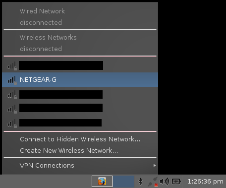
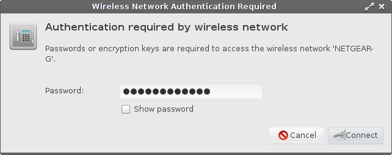
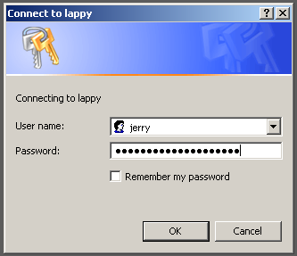
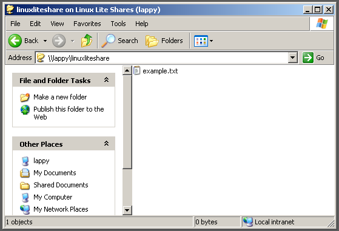
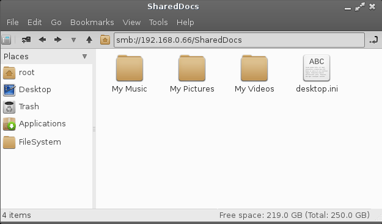

Network Connections & Network Shares
Network Connections:
Wireless Connections
Network Shares
Connecting to the Internet with Wired
To be written.
Connecting to the Internet with Wireless
In the system tray (near the clock, bottom right hand side of your screen) if you have no connection at the moment you will see a diagonal broken line with a red cross next to it. This denotes that there is no connection currently. Left click on the icon, if your wireless is working, you should have a list of wireless networks in your area, select your network. If you cannot see any wireless networks at all, your wireless device driver may not be installed, or for example your wireless switch on your laptop is in the Off position. If after you have checked this there are still no wireless networks showing, go to Menu, Settings, Install Drivers and see if your wireless device is listed. If it is, install the driver for it and continue with this tutorial. If it is not listed, click here to troubleshoot your device.

A box will pop up asking for your wireless password. If you would like to view your password while you type it, tick the 'Show password' box to ensure that you have entered your wireless password correctly.

After a successful connection, you should see a tray icon like the one shown below with 4 bars in total. The signal strength is displayed by the number of bars. The more bars in bold, the stronger the signal. In this example we are connected with 3 out of the 4 bars.
Network Shares: Menu, System, Network Share Settings
Assuming you have already set up shares on your Windows
computer, please read through the following guide.
Accessing shares between Linux and Windows computers
historically has been difficult, it doesn't always work out. In
this tutorial we hope to make the process a little easier for
you. First step, we
need to set up your Linux Lite shares.
Create a folder in your home folder and place into it files that you want to share with your Windows computer.
Right click on your home folder, Create Folder. Now give your new folder a name, in this example we'll use the name 'share'.
Next we need to tell Windows who we are going to login as
to access our Linux Lite shares.
Open up a terminal and type:
| sudo smbpasswd -a name |
where name is your Linux Lite username.
After that, you'll be asked to enter your Linux Lite password
twice.
Now, in the same terminal do:
| sudo leafpad /etc/samba/smbusers |
where you see:
| <name> = “<name>” |
replace name with your Linux Lite username in each of the
brackets, eg.
| <jerry> = “<jerry>” |
Save and Close the file, and close the terminal.
You will only ever need to do this part once.
Now click on Menu, System, Network Share Settings, Edit Network Shares, and follow very carefully the onscreen instructions. Do not miss any steps and take your time. A text editor will pop up with content similar to that of the example below. Only change the text that is in bold.
| #======================= Global Settings
==================================== [global] workgroup = WORKGROUP server string = Linux Lite Shares netbios name = linuxlite security = user encrypt passwords = true username map = /etc/samba/smbusers map to guest = bad user guest account = nobody dns proxy = no #======================= Share Definitions =================================== [linuxliteshare] path = /home/%U/share available = yes valid users = %U %G write list = %U browsable = yes public = no writable = yes guest ok = no read only = no printable = no locking = no strict locking = no |
There is no need to change any of the other settings.
Doing so may cause the shares not to work.
You only need to change:
| WORKGROUP - must equal the workgroup name on
the Windows machine. netbios name is the name of the Linux Lite computer, eg. in a terminal where you see, jerry@linuxlite:~$ linuxlite is the netbios name. path = the path to your share folder on Linux Lite that we want Windows to see, ONLY change the last name eg. /home/%U/share share is the name of the folder on Linux Lite you are sharing in your home folder. %U is the same as your username, leave the %U as it is. Now change ONLY the word share to the name of the folder you created in the first step of this tutorial. |
Save and Close the file.
Now that everything is set up, click on Menu, System, Network
Share Settings, Restart Network Share Services.
| NOTE: Anytime that you modify your share settings you must click on Restart Network Share Services for the changes to apply. |
If at any stage you want to add more share folders, you can simply add more blocks like in the example below:
| #======================= Global Settings
==================================== [global] workgroup = WORKGROUP server string = Linux Lite Shares netbios name = linuxlite security = user encrypt passwords = true username map = /etc/samba/smbusers map to guest = bad user guest account = nobody dns proxy = no #======================= Share Definitions =================================== [linuxliteshare] path = /home/%U/share available = yes valid users = %U %G write list = %U browsable = yes public = no writable = yes guest ok = no read only = no printable = no locking = no strict locking = no [linuxliteshareVideos] path = /home/%U/Videos available = yes valid users = %U %G write list = %U browsable = yes public = no writable = yes guest ok = no read only = no printable = no locking = no strict locking = no [linuxliteshareDownloads] path = /home/%U/Downloads available = yes valid users = %U %G write list = %U browsable = yes public = no writable = yes guest ok = no read only = no printable = no locking = no strict locking = no |
Don't forget to do Menu, System, Network Share Settings, Restart Network Share Services to apply the new share settings.
Accessing you Linux Lite Shares from Windows
Go to your Windows machine, in this example we'll use Windows XP.
Click on Start, Run and type in the netbios name of your Linux Lite computer preceded by 2 backslashes:
eg. \\lappy
A username and password dialogue box will pop up, enter in the user and password we created earlier.

And here we see our Linux Lite computer share folder:

All that's left to do is to double click on the Linux Lite share and we will be inside the share folder. Now you can copy and paste files to your Linux Lite computer.

Accessing your Windows shares from Linux Lite
Go to your Windows machine and find the ip address. To do this, open a command prompt and type in ipconfig.
Usually the results at the top has your ip address listed. In
the above example, the ip address is: 192.168.0.8
Make a note of this ip address.
Now go back to your Linux Lite computer, and open your home folder.
| NOTE: If by the end of this Shares tutorial you
are still not seeing any shares, try restarting both
machines. Also note that sometimes it can take a while before the shares appear. |
In the address bar, type in: smb://ipaddressofwindowspc where ipaddressofwindowspc is the actual numbered ip address of your Windows computer.
If everything went to plan, you should now be prompted for your Windows username, domain or workgroup and your Windows password.
Windows username - Windows workgroup name - Windows password
Now you can copy and paste files to your Windows computer.
